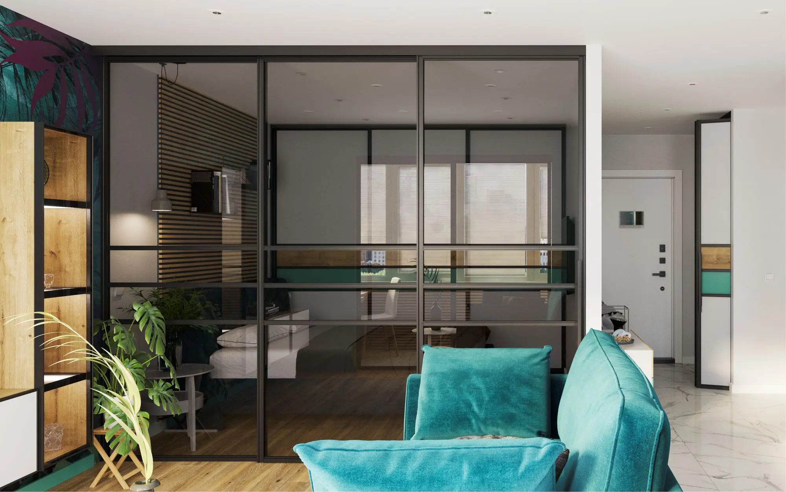

ЛОФТ-ПЕРЕГОРОДКИ И ГАРДЕРОБНЫЕРазделить пространство.
Разделить пространство.
Сохранить свет.
Лофт-перегородки, гардеробные и стеллажи. Собственное производство и монтаж изделий под размеры вашего помещения.
Обсудить мой проект
МАТЕРИАЛЫ И РЕШЕНИЯСвоя зона.
Своя зона.
Общий интерьер.
Отделить спальню, организовать рабочее место или выделить кухню. Подберём конфигурацию перегородки под планировку и задачи комнаты.
Рассчитать мой проект